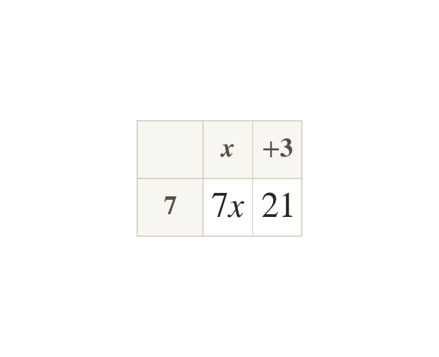

Expand the bracket first
A number outside a bracket multiplies every term inside. The sign in front of a term travels with it. So
A number outside a bracket multiplies every term inside it, so The sign in front of a term travels with it.